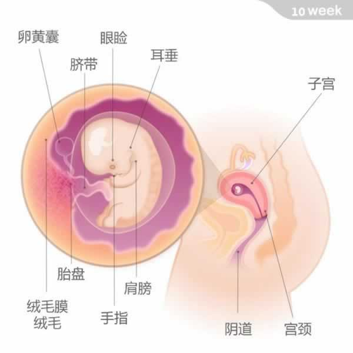

宝宝有一个花生大小，重约8克，从头部到臀部的长度为44~60毫米
此时宝宝身体各部分都已长全，他已经度过了发育的关键期，在未来的日子里他患上先天性畸形、感染以及受到药物影响的风险将大大降低。宝宝的身体姿势与此前相比挺直了一些，会打哈欠，还会做吸吮和吞咽的动作；甚至会伸腰和踢腿，像个可爱的小人儿。准妈妈的肚子从表面看上去，经常会是凹凸不平的——那是宝宝在做运动。
在这个阶段，宝宝的手指和脚趾已完全分开，骨骼也日趋坚硬；其脊椎的轮廓已经清晰显现。同时，肝、肺、肾、肠道等重要器官已经完全成形并开始工作。